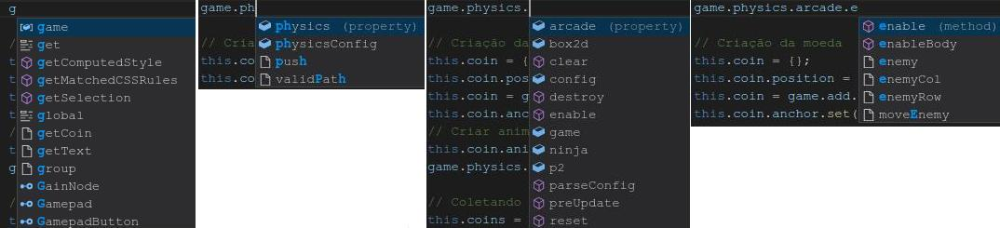

Phaser - Editores
VSCode Resumo
Procurando um bom editor para programar com o framework Phaser, encotnrei 3:
http://atom.io
http://brackets.io
https://code.visualstudio.com/
Me parece que todos os 3 foram criados com o Electrom ( https://electron.atom.io/ ).
Os 3 autocompletam o código HTML e CSS, mas não o JavaScript. Como o Phaser tem uma biblioteca que podemos indicar para o editor, então vejamos.
Com as dicas sugeridas aqui todos os 3 autocompletam o código do JavaScript do Phaser, mas me senti mais confortável com o VSCode.
Experimente os 3 e escolha o seu.
Em um documento HTML em branco digite:
!
e tecle TAB
Verá:
<!DOCTYPE html>
<html lang="en">
<head>
<meta charset="UTF-8">
<meta name="viewport" content="width=device-width, initial-scale=1.0">
<meta http-equiv="X-UA-Compatible" content="ie=edge">
<title>Document</title>
</head>
<body>
</body>
</html>
Com foco em device-width
Existe uma grande quantidade de extensões que ajudam na codificação. Veja abaixo.
Editor Para o Phaser
https://phasereditor2d.com/blog/downloads
Para que o VSCode auto-complete o código do Pahser e dê algumas dicas siga estes passos:
- Faça o download do phaser no formato zip.
https://github.com/photonstorm/phaser
- Descompacte
- Crie uma pasta em seu projeto
js/vendor ou lib/vendor ou apenas js/
- Copie os arquivos de phaser-master
v2/build (todos, exceto custom e config.php)
para a pasta js/vendor do projeto
- Crie uma pasta js/defs em seu projeto
Para programar com Typescript:
Copie estes arquivos
box2d.d.ts
p2.d.ts
phaser.comments.d.ts
phaser_box2d.d.ts
pixi.comments.d.ts
tslint.json
typings.json
da pasta v2/typescript para a pasta js/defs
- Caso ainda tenha algum problema crie na pasta js do projeto o arquivo jsconfig.json, contendo apenas
{ }
Com isso o VSCode ficará autocompletando bem o código do phaser e dando dicas sobre o código.
Configurações do editor
File - Preferences - Settings
Dicas
https://github.com/Microsoft/vscode-tips-and-tricks
https://code.visualstudio.com/docs/getstarted/userinterface
Instalar extensões
Clique no ícone à esquerda
ou
View - Extensions
Ou Ctrl+Shift+X
Ou no VSCode Market
https://marketplace.visualstudio.com/VSCode
Ou ainda
Ctrl+P e digite o comando. Exemplo:
ext install html-snippets
ext install vscode-color - https://github.com/anseki/vscode-color
Exibir Terminal Integrado
View - Integrated Terminal ou Ctrl+Shift+'
ou
Faça o download da extensão
Descompacte
Copie seu diretório para
$HOME/.vscode/extensions
Dica de CSS:
Crie um arquivo css
Digite:
background-color:
Tecle Ctrl+Barra de espaços que aparece a relação de cores
Quando digitar
.teste{
background-color: #f00;
}
Verá um pequeno quadrado na cor vermelha ao lado do código
Teclas de Atalho:
Ctrl+P - mostra os arquivos do diretório atual. Digite ? e receberá uma lista de comandos disponíveis
Ctrl+Shift+P - mostra os comandos do editor
Ctrl+G - ir para uma específica linha do arquivo aberto
Ctrl+PgDown - navegar entre as abas/arquivos abertas (para a direita)
Ctrl+PgUp - navegar entre as abas/arquivos abertas (para a esquerda)
Ctrl+W - fechar arquivo atual aberto
Ctrl+Shift+E - Abrir painel do Explorer (explorador de arquivos)
Ctrl+Shift+F - buscar um termo em todos os arquivos da pasta atual e sub pastas
Ctrl+Shift+X - mostrar extensões instaladas
Ctrl+Shift+' - exibir terminal integrado
Busca por todos os arquivos do projeto
Um recurso bem útil que vem com o VSCode.
Para o VSCode um projeto é uma pasta. Quando abrimos uma pasta podemos efetuar uma busca de uma string por todos os arquivos da pasta aberta.
Para isso basta clicar na lupa acima e à esquerda.
Dica:
Adding the <script>-tags at the bottom of the <body>-tags, ensures that the document's markup (also known as DOM), is fully loaded before our scripts are. This way we can assume it loaded when working with it in Javascript.
Agora veja o VSCode autocompletando o código do Phaser (4 níveis)
Quero digitar
game.physics.arcade.enable
Digito "g" e ele sugere game. Apenas teclo enter e digito um ponto colado
Digito "ph" e ele sugere physics. Teclo Enter e digito um ponto colado
Ele já traz "arcade" como primeira opção e teclo Enter e digito um ponto colado
Digito "e" e ele me sugere "enable". Teclo enter. Agora digito "(" e ele fecha.
Me ajuda muito. Veja abaixo as 4 fases:

Dica:
O autocompletar só funciona num contexto requerido, ou seja, somente dentro de um dos métodos do jogo e não fora. Dentro de:
preload(), create(), update() ou render().